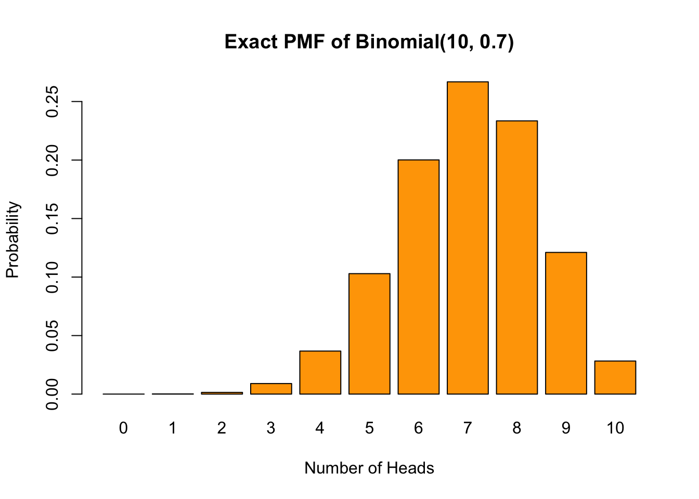
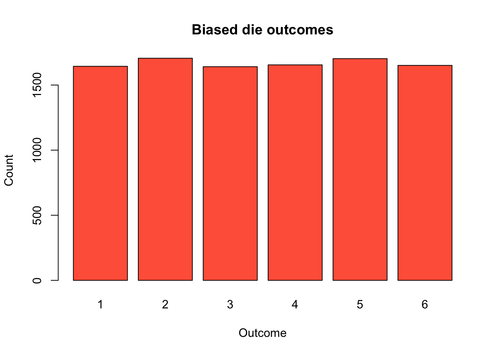
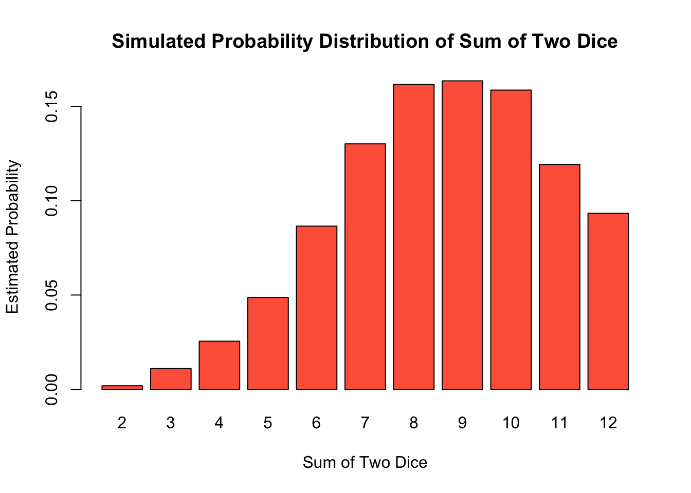
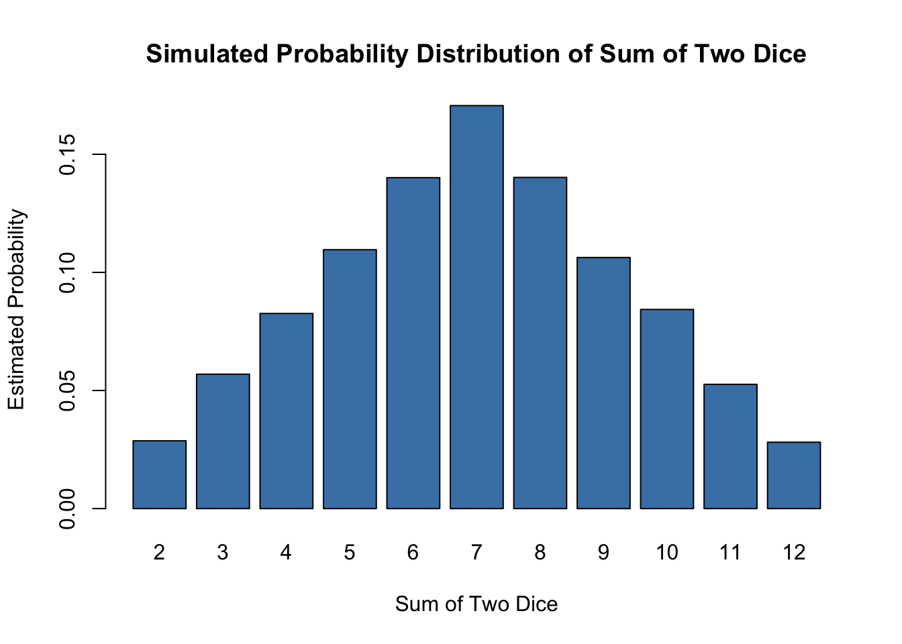

# Simulate 10 coin flips: 1 = Heads, 0 = Tails
# Proportion of Heads in 10 flips19 Part 1: Bernoulli and Binomial in Simulation
The probability of an event is the proportion of times it occurs in a very large number of identical, independent repetitions of the same random experiment. We can use random number generators in R to simulate these repetitions and see this in action.
19.1 1. Simulating a coin flip
Suppose we flip a fair coin. The probability of getting Heads should be 0.5, i.e. \(X \sim \text{Bernoulli}(0.5)\). Let’s verify this by simulation.
# Now simulate 1,000 flipsThe frequency gets closer and closer to the probability (0.5) as we increase the number of flips. This illustrates the Law of Large Numbers.
Alternative: using rbinom(). Hint:
Bernoulli(p): single trial (0/1 outcome, \(P(X=1)=p\))
Binomial(n, p): sum of n independent Bernoulli(p) trials
# 10 Bernoulli trials
# 1000 Bernoulli trials19.1.1 Optional: Seeds for reproducibility
# Scenario 1:
sample(c(1, 0), size = 10, replace = TRUE) [1] 0 1 0 0 1 0 1 1 1 1sample(c(1, 0), size = 10, replace = TRUE) [1] 0 1 0 0 1 1 1 0 1 0# Scenario 2:
set.seed(123)
sample(c(1, 0), size = 10, replace = TRUE) [1] 1 1 1 0 1 0 0 0 1 1set.seed(123)
sample(c(1, 0), size = 10, replace = TRUE) [1] 1 1 1 0 1 0 0 0 1 119.2 2. Simulating a biased coin
Now suppose the coin is biased, with \(P(H) = 0.7, P(T) = 0.3\).
# Simulate 1000 biased coin flip experiments: 1 = Heads, 0 = Tails
biased_coin <- sample(c(1, 0),
size = 1000,
replace = TRUE #,
# TODO: assigning sampling probability
)
mean(biased_coin)[1] 0.505Alternative: using rbinom()
# Simulate 1000 experiments, each with one coin flipThe simulated proportions should be close to 0.7.
19.3 3. From Bernoulli to Binomial
Suppose X is the number of times that the coin landed on heads over 10 independent experiments.
19.3.1 Task 1: What is the probability that \(P(X \leq 6), P(X \geq 8)\)?
# Repeat the flips 10 times in each experiment
# P(X <= 6)
# P(X >= 8)19.3.2 Task 2: What is the 95th percentile?
# Empirical quantile19.3.3 Task 3: We can also plot the empirical PMF with the following starter code. What does each bin represent?
# Empirical PMF
# pmf_emp <- table(sim_biased) / length(sim_biased)
# barplot(pmf_emp,
# main = "Empirical PMF of Binomial(10, 0.7)",
# xlab = "Number of Heads",
# ylab = "Probability",
# col = "steelblue")19.4 4. Compute the exact values
compute exact probability using
pbinom()compute exact quantile using
qbinom()compute exact PMF using
dbinom()
19.4.1 Task 1: What is the probability that \(P(X \leq 6), P(X \geq 8)\)?
# Probabilities19.4.2 Task 2: What is the 95th percentile?
# 95th percentile19.4.3 Task 3: We can also plot the exact PMF with the following starter code. How does it compare with the empirical PMF?
# Values of X (number of successes)
k <- 0:10
# Exact PMF for Binomial(n = 10, p = 0.7)
pmf_exact <- dbinom(k, size = 10, prob = 0.7)
# Plot
barplot(pmf_exact,
names.arg = k,
main = "Exact PMF of Binomial(10, 0.7)",
xlab = "Number of Heads",
ylab = "Probability",
col = "orange")
20 Part 2: Work by Hand
20.1 5. Compute the following exact probabilities:
Let \(X \sim \text{Bernoulli}(p)\), where \(P(X = 1) = 0.7\), \(P(X = 0) = 0.3\).
\(P(X=7)\)
\(P(X\leq 6)\)
\(P(X\geq 8)\)
Hint:
\(P(X = k) = \binom{n}{k} p^k (1 - p)^{n - k}\)
Use symmetry or complements when helpful
20.2 6. Compute mean for Bernoulli and Binomial.
- Bernoulli Random Variable
Let \(X \sim \text{Bernoulli}(p)\), where \(P(X = 1) = p\), \(P(X = 0) = 1-p\), \(p=0.7\), compute the mean.
- Binomial Random Variable
Let \(X \sim \text{Binomial}(n, p)\), \(n=1000\), \(p=0.7\), compute the mean. Hint: we can write \(X=X_1+X_2+ \cdots+X_n\), where each \(X_i\sim \text{Bernoulli}(p)\).
20.3 Extra practice: Simulating a die
20.3.1 Calculating probability of an event: rolling two dice
Now let’s simulate rolling two fair six-sided dice and ask: What is the probability that the sum equals 7? What about 8?
n_rolls <- 10000 # number of times we roll the pair of dice
die1 <- sample(1:6, size = n_rolls, replace = TRUE)
die2 <- sample(1:6, size = n_rolls, replace = TRUE)
sums <- die1 + die2
# Estimated probability that sum = 7
# Estimated probability that sum = 8We can compare to the exact probabilities. There are \(6 \times 6 = 36\) equally likely outcomes. The ways to get a sum of 7 are: (1,6), (2,5), (3,4), (4,3), (5,2), (6,1) — that is 6 outcomes. For sum = 8: (2,6), (3,5), (4,4), (5,3), (6,2) — that is 5 outcomes.
# Exact probabilitiesOur simulated values should be very close! (Because we simulated many identical, independent repetitions of this experiment.)
We can also look at the full distribution of the sum of two dice:
# Frequency table of all possible sums
table(sums) / n_rollssums
2 3 4 5 6 7 8 9 10 11 12
0.0287 0.0569 0.0826 0.1096 0.1401 0.1706 0.1402 0.1063 0.0843 0.0526 0.0281 # Visualize
barplot(table(sums) / n_rolls,
main = "Simulated Probability Distribution of Sum of Two Dice",
xlab = "Sum of Two Dice",
ylab = "Estimated Probability",
col = "steelblue")
# Add a horizontal line at the exact P(sum=7) = 6/36 for reference
abline(h = 6/36, col = "red", lty = 2)Notice the distribution is symmetric around 7 and triangular in shape — sums close to 7 are most likely.
20.3.2 Simulate a biased die
Now let the die be biased. Suppose the probabilities are:
- 1 with probability 0.05
- 2 with probability 0.10
- 3 with probability 0.15
- 4 with probability 0.20
- 5 with probability 0.20
- 6 with probability 0.30
prob_die <- c(0.05, 0.10, 0.15, 0.20, 0.20, 0.30)
sum(prob_die)[1] 1biased_rolls <- sample(1:6,
size = 10000,
replace = TRUE#,
# TODO: assigning sampling probability
)
head(biased_rolls)[1] 3 1 5 6 5 620.3.3 What is the probability of rolling a 5 or 6?
Exact answer from the probability distribution:
20.3.4 Display the distribution of the biased die
Because the outcomes are discrete, a barplot is often the first choice.
barplot(table(biased_rolls),
main = "Biased die outcomes",
xlab = "Outcome",
ylab = "Count",
col = "tomato")
We can also draw a histogram. hist(biased_rolls, ...)
20.3.5 Sum of two rolls of the biased die
We can also look at the distribution of the sum of two biased dice. Following code is essentially same as before, this time with prob = prob_die in sample().
n_rolls <- 10000 # number of times we roll the pair of dice
die1 <- sample(1:6, size = n_rolls, replace = TRUE, prob = prob_die)
die2 <- sample(1:6, size = n_rolls, replace = TRUE, prob = prob_die)
sums_biased <- die1 + die2
barplot(table(sums_biased) / n_rolls,
main = "Simulated Probability Distribution of Sum of Two Dice",
xlab = "Sum of Two Dice",
ylab = "Estimated Probability",
col = "tomato")
20.3.6 Compare it with the same for the fair dice
Reproducing the plot from earlier (no need to run the experiment again!):
barplot(table(sums) / n_rolls,
main = "Simulated Probability Distribution of Sum of Two Dice",
xlab = "Sum of Two Dice",
ylab = "Estimated Probability",
col = "steelblue")